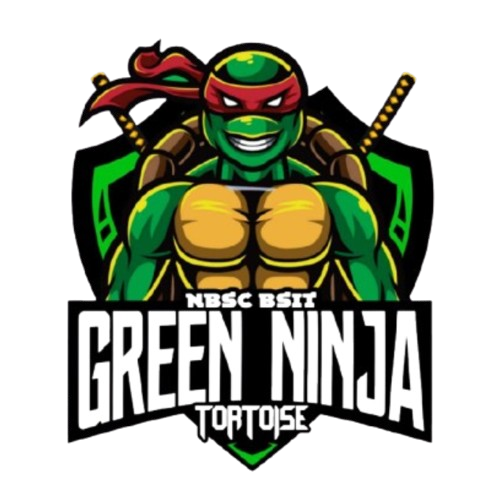
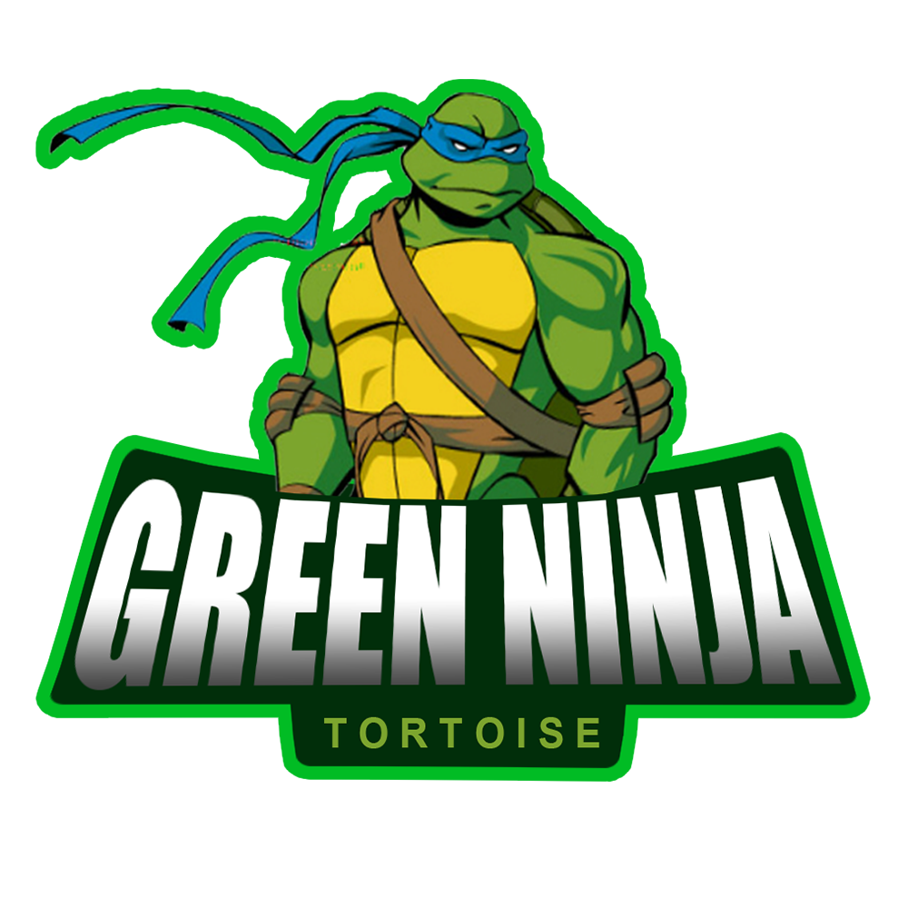

The Green Ninja 🐢
Wisdom in Knowledge, Power in Innovation.

OUR MISSION
The Green Ninja symbolizes knowledge, resilience, fierce ambition, and mastery of technology.
Students carry the blazing spirit of innovation, combining wisdom and courage to excel in the ever-evolving digital world.
They aim to develop leadership, problem-solving, and collaboration skills while contributing meaningful solutions to the institution and society.
Green Ninja Mascot Status Check
The Green Ninja is resting atop the highest peak.
Logo Details

Former Logo
The Green Ninja IT First Year logo represents intelligence, courage, and innovation.
It signifies the students’ strong identity, teamwork, and commitment to excellence in technology.
Every element symbolizes knowledge, resilience, and a blazing drive to succeed academically and professionally.
Current Logo
Officers & Representatives
3rd year Councilor - Christian Dirk Axel S. Igcalinos
Class mayor - Rainiel Jevson J. Bernales
Class mayor - Pauline May Coming
Class mayor - Zyra Sham E. Medado